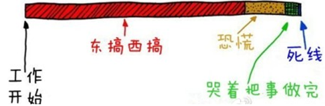

Suppose you want to carve out a certain position in the martial arts world. You could practice the Lone Nine Swords to become a top-tier master, or you could practice medicine and become a peerless miracle doctor. Both have status in the martial arts world, and both are scarce—one because of lethality, the other because everyone has a long road ahead with unpredictable twists and turns.
The same applies to programmers. Whether it's increasing value or improving expressive ability, ultimately you must achieve a certain degree of scarcity in some environment. Only then does a person have value. Scarcity is influenced by forces in two dimensions: one is your own effort, such as the value enhancement and expressiveness mentioned earlier; the other is changes in the broader environment and your adaptation to those changes. This chapter mainly focuses on the latter.
What Scarcity Can Bring You
Since scarcity has such a great impact on an individual, what exactly can it bring to a person? Let's look at a simple example:
There was once such a story in Japan. A person was responsible for maintaining a large-scale system at a telecommunications company. Although his income was substantial, over time he became dissatisfied with his salary growth and ultimately chose to leave. As soon as he left, the large-scale system immediately began running with constant problems. Helpless, the telecommunications company had no choice but to invite him back with a high position and generous pay. It's easy to imagine that to achieve this goal, the company must have offered conditions in both income and position that this person could not refuse.
This is a typical example of scarcity in action. The large-scale system had to be used because it was tied to a huge user base, and meanwhile, the system's maintenance was impossible without this person. This made his scarcity extremely prominent.
This is actually quite interesting, because in this case, it was bad software that created a person's value and scarcity. Although this isn't ideal, such situations are not rare. From a market perspective, it doesn't care whether a program's internal logic is clear or whether it has sufficient comments; it only cares whether the thing can operate well. So garbage code in active use can still have enormous value. In other words, commercial considerations have an even greater impact on scarcity.
To prevent the above text from being misinterpreted, here is an additional note. The above path is not one that is especially worth imitating. Because for the person described above, his value was essentially bound to a specific system, which meant he had almost no mobility. This would limit a person's achievements and create significant risk for the future.
Ways to Improve Scarcity
To improve your scarcity, you usually need to work on two aspects simultaneously: one is improving yourself; the other is going along with the trends of the times. Improving yourself can make you scarce—this is easy to understand. But without adapting to the trends of the times, this scarcity may not be easily realized. In 2013, someone proficient in DOS programming was undoubtedly scarce, but that didn't necessarily translate into value. Below, we will explain scarcity from these two perspectives.
1 Rush Toward the High Ground of Value in the Programming World
Investment master Mr. Buffett once said something that spread widely: Some businesses have towering moats, and inside the moats there are ferocious crocodiles, pirates, and sharks guarding them—these are the businesses you should invest in. This vividly describes the external image of high-value ground.
For businesses, a moat can be many things: difficult technology (Boeing aircraft), hard-to-break user stickiness (QQ), exclusive resources (PetroChina), unique corporate culture (Apple), and so on.
A moat gives a business an irreplaceable value. From the supply side, this is about creating scarcity in the company's own value: you can't do without it, and you have no other options. This is high-value ground. When a company stands on it, it is relatively safe. This is precisely why large companies ultimately try to dominate a certain order and ecosystem—only in this way can they control scarcity.
The same logic applies to individuals. Scarcity itself can come from many sources—it can come from timing, or it can come from height. Scarcity derived from timing is more like an accident; it is easily broken and often lacks lasting value. Relative to a person's lifetime, this is not a strong support. For example: Erlang programmers may be relatively rare, but a pure language barrier isn't as high as people think. If there were truly huge demand, the world could gain several million Erlang programmers in a month.
When a person cultivates their own scarcity, they really do need to find a place guarded by crocodiles, pirates, and sharks—this is high-value ground. Of course, the crocodiles and such are hardly something you can release yourself, which is different from a business. On this point, programmers on the management track and those on the technical track face different choices and need to take different measures.
For programmers on the technical track, there are generally two ways to reach high-value ground of the kind described above:
The first is to reach a certain height and then expand horizontally. For example: programming languages, (financial) business logic, foreign languages, networking knowledge, and so on can be combined to form a high ground. The programmer may not match a genius programmer in programming languages, may not match a bank employee in business logic, and may not match a professional translator in foreign languages—but every additional layer of filtering raises the altitude of the high ground by one notch, ultimately converting into scarcity.
The second is the thoroughly expert path. Some positions may not require broadening one's scope widely. For example, people working on TTS or OCR algorithms—some may not even be very familiar with programming languages—but they can genuinely be experts in a particular area. This is also a kind of high-value ground. In this direction, once you truly reach a certain height, it is not something that can be surpassed by merely accumulating quantity. For example: considering 100 or any number of mediocre scientists as equivalent to one Einstein is undoubtedly foolish.
Whichever direction you take, the end result must achieve this effect: you can completely handle something of great commercial value, and most people can't handle it. For example:
- I can lead the development of a mobile phone because I understand both software and hardware, and I also know how to develop a good product. Looking at it now, if you're truly capable, you could go solve the Smartisan problem.
- I can improve OCR recognition accuracy by 1%.
- I can lead the construction of a website supporting millions of concurrent connections.
- I can lead a team to complete the entire system for this bank.
- … …
At this point, it's best not to measure yourself with purely technical viewpoints, such as "I'm good at Java," "I can use PHP," "I know the TCP/IP protocol," and so on. It's not that these have no value, but rather that this perspective is somewhat low-end. Only when you can completely handle one thing can you be directly linked to commercial interests, and only then can you have true scarcity.
For programmers on the management track, there seems to be only one way to reach high-value ground of the kind described above:
You must work hard to achieve results that people remember. These results can be a product or some kind of performance. Today, when WeChat is mentioned, everyone thinks of Zhang Xiaolong. This is because WeChat itself attracted 200 million users in less than two years and had a very good reputation—it was truly a miracle.
Regarding high-value ground, there is a typical trap: experience that contains no complexity and is specific to a particular company is often mistakenly seen as high-value ground, but in fact it isn't. Because as long as the environment is relatively open, this kind of thing can often be cracked in a short time. For example: a company may define its own processes, and many things in them are relatively vague, so newcomers hit walls everywhere when they try to follow them. This can easily make people mistakenly believe that mastering the process itself has high value. But in reality, this is caused by imperfect processes—it's an accident of a specific context. This does create scarcity, but it's basically not transferable, and in most cases it may not be a good choice.
Does Requirements Development Count as High-Value Ground?
In agile-leaning organizations, programmers are often very close to requirements. But in more traditional development methods, there is often a distance between the people handling requirements and the programmers. People doing requirements development may not be good at writing programs, and people writing programs may not be good at writing requirements.
So does requirements development count as high-value ground?
Many pure programmers might feel that pure documentation work has no technical substance and that anyone could write it, so they might think it doesn't qualify as high-value ground. But from a commercial value perspective, when a person thoroughly understands the business of a particular industry (knowing technology is even better), then it truly is high-value ground.
Here's an analogy: Tmall only provides the platform, and various merchants sell things on it. So does Tmall have value? Of course it does. Tmall's sales on 11/11 exceeded 10 billion yuan, higher than America's Black Friday. How could it possibly lack value?
Then why does Tmall have value? Because in the eyes of end customers, Tmall comes first, and then the various merchants. Tmall monopolizes the entry point, so Tmall is more valuable.
The relationship between requirements and development is similar. When a person handles the requirements for a product, in the eyes of outsiders, the requirements this person creates represent the product. Only through the product can you see the programmers' contributions. The way outsiders think starts with the requirements developer, then the programmers.
One of the more extreme practices is having the requirements developer lead the entire project, with all other personnel working under the requirements developer's leadership.
At this point, splitting hairs is meaningless. For example, some might think that without programmers there would be no product—this is as meaningless as arguing that without merchants there would be no Tmall. In reality, both have value. What we're discussing here is simply whether this counts as a piece of high-value ground.
2 Walk Ahead of or Within the Technology Wave
In the IT world, the banners on the city walls change hands extremely quickly, and every change effectively causes some technology to rise or some technology to decline.
Back then, the development of WPS97 took a very long time. Baidu Baike describes it as follows: Windows had many new things; before we could even get familiar with them, Microsoft upgraded again. Many technical materials were also hard to find. Microsoft controlled Windows, while we had to start from scratch on everything ourselves, which caused WPS97 to be born with difficulty. If WPS97 could have been released in 1995 and competed directly with Word 6.0, Word 6.0 would have had no chance.
This vividly records the scarcity created by the rise of a new technology. It can also be seen from the side that in 1995, companies desperately wanted high-level Windows developers. This scarcity was caused by technology changes behind industry cycles. Today, with search engines, even programmers just entering the industry can solve most Windows programming problems.
When facing such technological trends, the more appropriate approach is to bravely embrace new technologies based on reality.
Being grounded in reality means considering the transferability of skills, considering the inseparable nature of practice and learning, choosing new technologies that you believe have good prospects, and investing time in them. But there is a trap here: when new technology is mentioned, many people may think of a new programming language, but programming languages are too fundamental, with too low barriers, and are not a sufficiently large area of consideration. If your perspective is limited to this scale, you will see too many things and find it hard to focus. At this point, you need to appropriately scale up the unit of your consideration. In English, the term Tech Stack is commonly used to describe this set of technologies.
For example: LAMP(Linux+Apache +MySQL+Perl/PHP/Python) can be one unit of consideration; Windows programming + ASP.NET can also be one unit of consideration; and various things related to big data processing can also be one unit of consideration.
If we look back ten years, we will find that there was first the heyday of PC client programs, then the rise of the Internet, and then the flourishing of mobile clients. As of now, mobile clients and the Internet are undoubtedly more attractive than traditional PC clients. In the cloud era, the two Tech Stacks with relatively clear boundaries are a series of technologies based on closed source (mainly provided by Microsoft) and a series based on open source. If one of these Tech Stacks gradually gains an advantage, then undoubtedly those who have accumulated experience in the corresponding Tech Stack will have better scarcity.
Although at present the two seem to have no obvious difference, on this point I personally believe that open source Tech Stack will gradually gain the advantage in the future. On Quora(quora.com) and High Scalability(highscalability.com), we can find the technical architectures of most emerging foreign Web 2.0 websites with market value exceeding 1 billion USD, such as Flickr, Pinterest, Instagram, etc. If you read these technical architectures carefully, you will find a fundamental commonality: they are all built on open source technologies.
There is a certain inevitability behind this unanimous choice. When you want a certain degree of customization and are unwilling to pay high costs, the open source Tech Stack is almost the only choice. Especially when open source technologies have more and more successful examples, this advantage becomes increasingly obvious.
If I must choose between the client (iOS, Android, WinRT) and the Internet, I personally believe that the Internet has more advantages than the client.
The Risks Accompanying the Ebb of Technology
Many people say that Microsoft accomplished almost nothing in the 10 years from 2002 to 2012, and they also talk about how, from a stock perspective, if you had bought Microsoft stock 10 years ago, you would have earned only 30-40% by now, whereas if you had bought Apple stock, you would have earned more than three times. Personally, when my mind occasionally wanders, what I think about is not just this, but rather that if Microsoft loses another 10 years, then it is not only Microsoft that will go down, but also the various companies and individuals bound to Microsoft, including many senior Windows programmers.
In the PC world, Microsoft is undoubtedly the overlord. But if the PC era has passed, then this overlord, if it fails to transform successfully, will undoubtedly be buried along with it. At that time, countless people who have devoted half their lives to the Microsoft platform will still be around—where are they supposed to go?
The rise of a technology tide makes many people at its crest become dazzling stars, and the ebb of a wave will likewise take away the glory of some people associated with it. The difference is that the former is spectacular and stirring, while the latter is quiet and silent.
In such a situation, the only real choice is indeed to keep pace with the times.
Check Your Own Scarcity
It is very difficult to examine your scarcity from the perspective of social needs, because the relevant data is always very lacking. But there is a simple method that can quickly let a person recognize their scarcity: suppose a recent graduate works very hard to learn; how long would it take for them to take over your job? For example, if a graduate can replace you in one or two years with just hard work, and your age is already approaching 30, then your scarcity is bound to be very poor.
On the contrary, if even a very hardworking graduate needs five years to reach your technical level, and without specific opportunities can never replace you, then even if you are already 30, your scarcity will be very good. The "opportunities" here can refer to certain special practice opportunities.
If you want to assess your scarcity in a relatively systematic way, then you need to consider the following questions in order:
- Is the technology you have mastered about to become outdated?
The technology tide always eliminates various technologies periodically, and the targets of elimination differ at different points in time. Although some are not completely eliminated, at least they are no longer as glorious as they once were. Taking 2013 as the boundary and looking back 10 years, such technologies include: Flash, MFC, Delphi, etc.
To stay sensitive to technology trends, regularly reading other people's architectures is very important.
Of course, technologies that may become outdated do not only refer to general-purpose technologies, but also refer to old systems that may be replaced by new solutions. For example: many companies once used Lotus Notes for knowledge management, but few people use such systems now.
- Exactly how many people possess the skills you have mastered?
When examining this point, as described earlier, you should think more from the company's perspective rather than the individual's perspective. Simply knowing how to use a certain language or framework at that level certainly has no scarcity. For example: simply using ASP.net to develop web pages has almost no high technical barrier, but having a considerable command of database design and being able to effectively ensure system performance through load balancing, caching, and other means can take your scarcity up a level.
Article from:http://blog.csdn.net/leezy_2000/article/details/38278309
Click to Share Notes
<p style="font-size:14px;">The note must be an extension of the content of this article!</p><br> <p style="font-size:12px;"><a href="../tougao.html" target="_blank">Submit an article, click here</a></p> <p style="font-size:14px;"><a href="./runoob-user-test-intro.html" target="_blank">How to get a registration invitation code</a></p> <h3 class="text-muted"><i class="fa fa-info-circle" aria-hidden="true"></i> You must <a href=".." class="runoob-pop">log in</a> before sharing notes!</h3> <p><a href="./runoob-user-test-intro.html" target="_blank">How to get a registration invitation code</a></p>